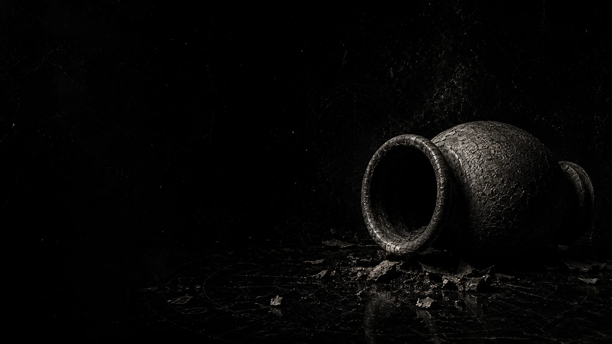

ÁLBUM V / SUBMUNDO

O Arranjo do Submundo
SUBMUNDO / porta debaixo da casa
“A casa abre por baixo. A fome mostra a planta. O mecanismo respira.”
Descer não revela tudo. Só deixa a porta acesa.
faixas
- 01LIMIAR
- 02A Porta Debaixo da Casa
- 03Organismo Associado
- 04A Casa Dormia com os Olhos Abertos
- 05A Ânfora
- 06A Sutura Invisível
- 07O Arranjo do Submundo
- 08O Guardião das Formas
- 09Erro Original
- 10Flor de Plástico
- 11Colapso